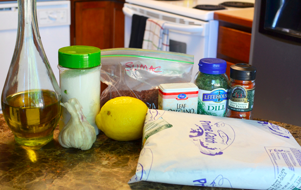
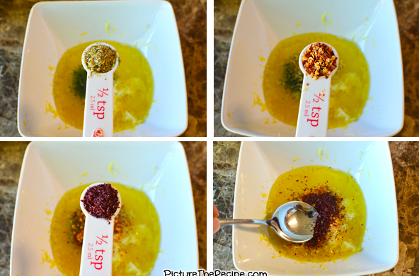
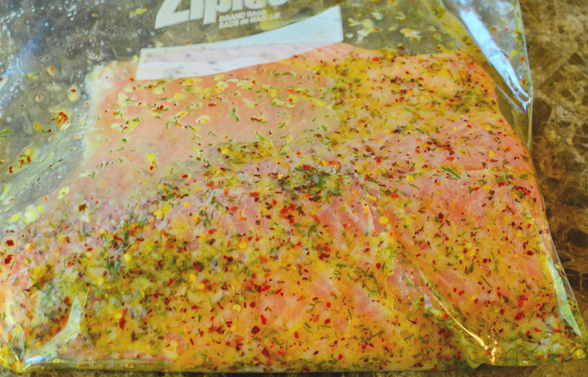
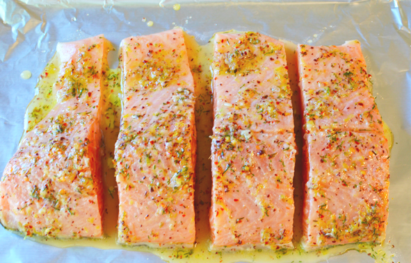
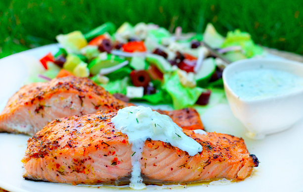

|

Ingredients: 1 1/2 lb fresh salmon, 2 tbsp Olive Oil, 1 tsp lemon zest, 2 tbsp lemon juice, 2 cloves of garlic, 1 tsp salt, 1/2 tsp fresh dill, 1/2 tsp dried oregano, 1/2 tsp crushed red pepper, 1/2 tsp sumac |
|

Mix together the olive oil, lemon zest, the juice of the lemon, 2 cloves of garlic, the salt, fresh dill, dried oregano, crushed red pepper and sumac. |
|

Place the salmon fillet in a zip lock bag and pour the mixed marinade over the salmon. Lock the bag and refrigerate to allow the fish to marinade for about 20-30 minutes. |
|

Once marinated, place the fish on a foil lined baking sheet skin-side down and bake in a 400F oven for about 15-20 minutes. Don’t forget to pour over all the marinade onto the fish. |
|

Serve hot with some greek salad and some cool Tzatziki Sauce over the top….yummm! |